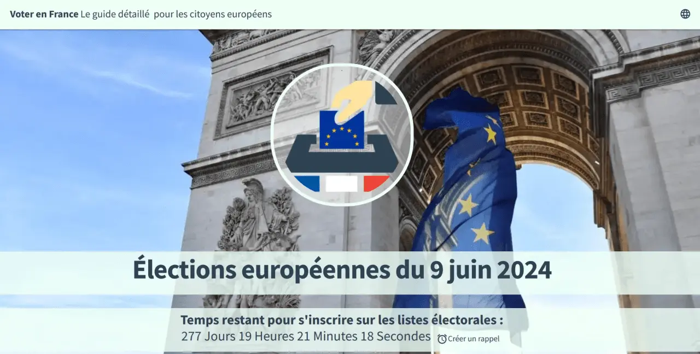
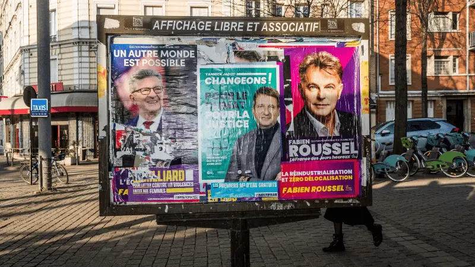

Presse
Une sélection d'articles et d'entretiens à propos de moi ou rédigés par moi.
2025-2024
-

Sauvons l'Europe - Réforme des traités : si ce n’est pas maintenant, alors quand ?
(Tribune, Fevrier 2025)
Les dernières semaines ont été révélatrices pour l’Europe : les États membres de l’Union européenne se retrouvent au pied du mur – non seulement pour réagir, car nous sommes loin de la proactivité – mais aussi pour démontrer une unité qui jusqu’à présent, n’existait que sur le papier. Lire l'article. -
Hugo au Perchoir - Sven Franck présente la liste de Volt France, un parti Paneuropéen pour les Européennes
(Entretien, Janvier 2024)
Interview de la tête de liste du Parti Volt France, Sven Franck, réalisée dans le cadre de l'émission "Le Journal des Européennes", une hebdo sur Twitch diffusée le Lundi à 20h avec une interview politique à 21h avec un candidat à l'élection de Juin prochain. Regardez l'éntretien.
2023-2022
-

European Citizens Radio - Sven Franck - Le débat français sur les élections européennes
(Podcast, Décembre 2023)
Marie-Hélène Caillol, notre collaboratrice française de European Citizens Radio, s'entretient dans ce podcast en français avec Sven Franck du parti européen VOLT en France. VOLT est - avec DiEM - l'un des deux partis véritablement européens, l'un progressiste, l'autre libéral, qui se présentent sous le même nom dans et le même programme dans différents pays de l'UE. Dans cet entretien, Marie-Hélène interroge Sven Franck sur les objectifs de VOLT pour les élections européennes de juin 2024 et analyse avec lui le débat français sur l’Europe. Écouter le podcaste. -

GEAB N⁰ 178 - Le bulletin mensuel - Regard de lecteur sur l'avenir.
(Entretien, Octobre 2023)
« Si la technologie remplace la traduction, elle ne doit pas remplacer la nécessité d’apprendre plusieurs langues ». Lire l'article. -
Confrontations Europe - Gaia-X: L'Homme à rien faire.
(Article, Septembre 2023)
Dans cet article pour Confrontations Europe, Sven Franck, de la European Cloud Industrial Alliance, nous explique quelles leçons tirer du projet Gaia-X pour développer un Cloud européen capable de fédérer nos données de manière sécurisée. Lire l'article. -

Yorkshire Bylines - Un message des Flandres : Vous devez revenir...
(Article, Septembre 2023)
Un groupe de militants s'est rendu en France pour découvrir ce que les citoyens de l'UE pensent d'un retour des Anglais dans l'Union Européenne. La réponse les a encouragés et émus. Lire l'article. -

Sauvons l'Europe - L’Europe commence par le vote
(Entretien, Auôut 2023)
A l'approche des élections européennes, Sauvons l'Europe soutient la campagne de Volt France pour faciliter l'inscription sur les listes électorales des 1,5 millions de résidents européens vivant en France. Pour que cette initiative soit un succès, nous faisons appel à votre aide pour relayer cette initiative auprès du maire de votre commune. Lire l'article. -

Sauvons l'Europe - A bientôt, 9 mai
(Tribune, Mai 2023)
Une fois par an, nous sommes très fiers d’être Européens, avant de revenir aux agendas nationaux. Le projet européen ne progressera pas en brandissant les couleurs européennes ou en plaçant des drapeaux au fronton des mairies. Lire l'article. -

Deutschlandradio - La tendance générale est beaucoup plus conservatrice qu'en 2017
(Entretien, Mars 2022, en allemand)
La guerre de Poutine en Ukraine a complètement bouleversé les plans de la plupart des candidats dans la campagne électorale française, déclare Sven Franck, co-président du parti Volt en France. De nombreux sujets ont perdu de leur importance, mais une conscience s'est également développée selon laquelle l'Europe est importante. Lire l'article.
Avant 2022
-
![Euractiv - Gaia-X : Un cheval de Troie pour les géants de la technologie en Europe [Shutterstock]](img/FR-Graphic-Gaia-X-Trojan-Horse.webp)
Euractiv - Gaia-X : Un cheval de Troie pour les géants de la technologie en Europe
(Tribune, Novembre 2020, en anglais)
L'initiative d'infrastructure de cloud de l'UE, Gaia-X, présente un grand risque de détruire l'écosystème européen et les espoirs de souveraineté après l'inclusion de certaines des plus grandes entreprises technologiques mondiales dans le projet, écrivent Stefane Fermigier et Sven Franck. Lire l'article. -

Euractiv - L’Europe sans moyen et sans mandat — un tigre de papier
(Tribune, Mai 2020)
Les institutions européennes sont handicapées par l’incapacité des gouvernements à s’entendre sur une stratégie commune pour lutter contre le COVID-19 et ses répercussions économiques. Aujourd’hui, plus de 70 ans après la fondation de l’UE, elles restent bloquées et dépendantes. Lire l'article.